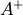
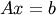
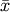
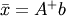
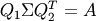
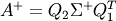
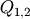
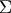
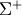

numpy.linalg.pinv¶
- numpy.linalg.pinv(a, rcond=1e-15)¶
Compute the (Moore-Penrose) pseudo-inverse of a matrix.
Calculate the generalized inverse of a matrix using its singular-value decomposition (SVD) and including all large singular values.
Parameters : a : array_like, shape (M, N)
Matrix to be pseudo-inverted.
rcond : float
Cutoff for small singular values. Singular values smaller (in modulus) than rcond * largest_singular_value (again, in modulus) are set to zero.
Returns : B : ndarray, shape (N, M)
The pseudo-inverse of a. If a is a matrix instance, then so is B.
Raises : LinAlgError :
If the SVD computation does not converge.
Notes
The pseudo-inverse of a matrix A, denoted , is defined as: “the matrix that ‘solves’ [the least-squares problem] ,” i.e., if  is said solution, then is that matrix such that .
It can be shown that if  is the singular value decomposition of A, then , where  are orthogonal matrices,  is a diagonal matrix consisting of A’s so-called singular values, (followed, typically, by zeros), and then  is simply the diagonal matrix consisting of the reciprocals of A’s singular values (again, followed by zeros). [R39]
References
[R39] (1, 2) G. Strang, Linear Algebra and Its Applications, 2nd Ed., Orlando, FL, Academic Press, Inc., 1980, pp. 139-142. Examples
The following example checks that a * a+ * a == a and a+ * a * a+ == a+:
>>> a = np.random.randn(9, 6) >>> B = np.linalg.pinv(a) >>> np.allclose(a, np.dot(a, np.dot(B, a))) True >>> np.allclose(B, np.dot(B, np.dot(a, B))) True